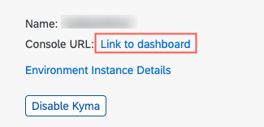
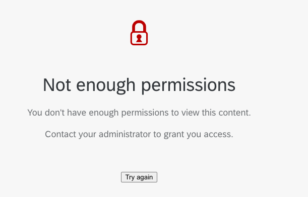
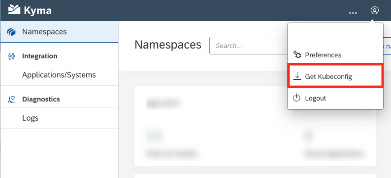

Run a CAP Application on Kyma
Additional Documentation
Preface
SAP recently released the SAP Business Technology Platform, Kyma runtime, a managed Kubernetes offering with Kyma.
Kyma is much about extending existing applications, but you also get a full-blown Kubernetes cluster including Istio service mesh that you can use to build a standalone cloud application.
In this tutorial, you deploy an application built with the SAP Cloud Application Programming Model (CAP) to an SAP Business Technology Platform, Kyma runtime cluster. The CAP application has an OData service, SAP Fiori UI and uses SAP HANA as a database.
The SAP BTP Application Development example is used as starting point.
The tutorial can be also done with any other Kyma installation, but you need an SAP HANA database and an HDI container and you then need to do the part with SAP HANA credentials differently.
The CAP part is probably the smallest in the tutorial: Frankly speaking, just package it into a docker container and run it. But the tutorial also describes how to get a small docker registry running. If you are experienced with Kubernetes, you can skip some sections.
Since SAP HANA Cloud isn’t yet available for Kyma, you take it from Cloud Foundry. It's a bit tricky to copy the credentials, but at the end it's just copying and pasting values. Scripts are provided to help you here. So, don't get distracted by this.
Disclaimer
Note, that this tutorial is intended to give an introduction in the topic and not for deploying productive applications.
CAP doesn't officially support Kubernetes and Kyma as a platform right now.
Preconditions
These are preconditions to do this tutorial:
SAP BTP Application Development Example
You can find the starting point of this tutorial in the cap/freestyle branch:
-
Go to the directory where you want to create the example.
-
Create a folder for your example:
For example:
mkdir cap-kyma-app -
Clone the example GitHub repository and checkout the example branch:
git clone https://github.com/SAP-samples/cloud-cap-risk-management cd cloud-cap-risk-management git checkout cap/freestyle-ui5-app -
Copy all files from the example to your folder, except the
.gitfolder:For example:
cp -r .gitignore $(ls -1A | grep -v .git) ../cap-kyma-app -
Open a new project in your source editor for the folder
cap-kyma-app:For Visual Studio Code:
cd ../cap-kyma-app code .
Find the final code in the kyma/app branch.
Local Software
The following local software is required:
node(Node.js version 12.x or 14.x is recommended)@sap/cds-dkNPM package (npm install --global @sap/cds-dk)docker(for example, Docker Desktop for macOS or Windows)- A source code editor (Visual Studio Code is recommended)
bashorzshshell to run the command snippets on MacOS or Linux, or Git Bash for Windows, MinGW, or Cygwin)kubectl(Kubernetes Command Line tool), see this tutorial how to install ithelm(Helm Chart Command Line, not needed if you use an existing docker registry)cf(Cloud Foundry Command Line Interface (CLI))git(Git Downloads )- (For Windows users only): You have installed the SQLite tools for Windows. Find the steps how to install it in the Troubleshooting guide in the CAP documentation.
If you have a Mac, many of the commands can be installed using Homebrew (brew install ...). For Windows, there's a similar offering called Chocolatey. Refer to the binary installers of the components otherwise.
Enable Kyma in SAP BTP Subaccount
You need an SAP BTP Subaccount with consumption-based model (that is, Cloud Credits). Kyma is currently supported on Azure landscapes only, as of September 2020. Although Kyma is needed at a later point in the tutorial, it’s recommended to start with this step, because the Kyma provisioning can take some time.
For this tutorial you have two options:
Option 1: Create Your Own SAP BTP Trial Account
Option 2: Use an Existing SAP BTP Subaccount
Option 1: Create Your Own SAP BTP Trial Account
- Go to SAP BTP Cockpit.
- Choose Go To Your Trial Account.
- If you don't have a user, you need to register for a free.
- Wait for the completion of the on-boarding.
- You should land on the Subaccounts page of your Global Account on trial.
- Choose trial.
- Go to Kyma Environment.
- Choose Enable Kyma.
- Provide a Cluster Name.
- Choose Create.
This takes a while. You can start the tutorial in the meantime.
Option 2: Use Your Existing SAP BTP Subaccount
If you already have an older trial account, then you might not see the Enable Kyma button. In that case:
- Go to Entitlements.
- Choose Configure Entitlements.
- Choose Add Service Plans.
- Search for and select Kyma runtime.
- Check the trial (Environment) checkbox.
- Choose Add 1 Service Plan.
- Choose Enable Kyma.
- Provide a Cluster Name.
- Choose Create.
This takes a while. You can start the tutorial in the meantime.
SAP BTP’s XSUAA is used to access the Kyma runtime. Please follow the steps to assign Roles in the Kyma Environment. In some cases, it will still take 5-10 minutes to get access to Kyma Runtime.
Enable Cloud Foundry
To use the SAP HANA Cloud service, you can either enable Cloud Foundry for the same subaccount or use a different subaccount, for example, an already existing or trial subaccount.
Install the Cloud Foundry CLI
Later in this tutorial, you need to log on to Cloud Foundry using the command line. Therefore, it's necessary to install the Cloud Foundry CLI. See the Cloud Foundry documentation for detailed steps on how to do that.
Run the CAP Application in a Docker Container Locally
In the first part of this tutorial, you prepare your application to be run on Kyma.
Build a Docker Container
Since all applications in Kubernetes as in Kyma are docker containers, you need to create a docker image for the CAP application. For that, you need to define a file Dockerfile that describes, how to build up the image and what to do when the docker image is run. The file starts with the FROM directive that names the base image that you want to use since you don't want to start from scratch. Here, you use a public image that already contains the NodeJS 12.x installation. Additionally install openssl, which is required by the SAP HANA client and carry out npm install.
You then declare that the CAP default port 4004 is exposed to the outside and run the CAP server with npm start.
-
Navigate to the root folder of your app:
cd cpapp -
Create a file named
Dockerfileand add the following lines to it:FROM node:12-slim WORKDIR /usr/src/app COPY gen/srv . RUN npm install EXPOSE 4004 USER node CMD [ "npm", "start" ] -
Add
sqlite3as project dependency, so you can try out the scenario without an external database service:First, the dev dependency to
sqlite3needs to be removed and then its added again as a runtime dependency.npm uninstall sqlite3 npm install sqlite3 -
Add the following snippet to the
package.jsonfile:{ "name": "cpapp", ... "cds": { "requires": { "db": { "kind": "sql" } } } }This tells CAP to use SQLite in dev and SAP HANA in productive mode.
-
Before you can build the image, run
cds build, because the image takes the build results from thegen/srvfolder. You can also do this in the docker build, but that would require additional steps that you skip for now.cds build -
Build the docker image locally:
Make sure that the docker daemon is running (for example, Docker Desktop for MacOS or Windows).
docker build -t cpapp .This builds the docker image specified in
Dockerfilefrom the current directory (.argument). The image is tagged with the namecpapp. Without giving a tag a random tag will be added.You should see an output similar like:
... Removing intermediate container 4f451017d70f ---> 948523646f60 Step 5/6 : EXPOSE 4004 ---> Running in 1a2b7a0ec606 Removing intermediate container 1a2b7a0ec606 ---> be849ff002e1 Step 6/6 : CMD [ "npm", "start" ] ---> Running in cb0b32163709 Removing intermediate container cb0b32163709 ---> 1e0c26b94ac6 Successfully built 1e0c26b94ac6 Successfully tagged cpapp:latest
Docker images consist of several "filesystem layers". The base image is a layer and your own docker image is a layer on top. Each layer can add or remove files. This is convenient because it saves storage because your custom images contain only the delta of files added or removed. To be more precise an image consists of multiple layers. The docker build will automatically decide when to create a new layer. You can see the different layers in the docker build output, for example: ---> 365313c4290e
Run the Docker Container
Check the Content of the Docker Container
-
You can run the docker container and look inside its contents:
docker run --rm -i -t cpapp /bin/bashThis starts a docker container with your image (
-t cpapp) and starts the bash shell (/bin/bash) that happens to be part of your base image in an interactive (-i) mode. -
Look inside the contents using the
lscommand:node@a5a0b8115eb5:/usr/src/app# ls manifest.yaml node_modules package-lock.json package.json srv -
Exit the container using
exit(Pro-tip: Ctrl + D :-)).
Run Your CAP Service
Now, it's time to run your CAP service. So, lets do this.
-
Run the container:
docker run --rm -t cpappWithout specifying the command, it runs the default command, that is
npm start. You can try to access the service at http://localhost:4004, but it doesn't work. It shows a similar error message like this:This site can’t be reached localhost refused to connect.Although the docker container exposes port
4004, the "host" of the container, that is your PC or Mac, doesn't make it accessible. You need to declare it in the docker command line. -
Stop the service with Ctrl + C.
-
Run the container again with the publish parameter:
docker run --rm -p 4004:4004 -t cpappThis tells docker to expose the port
4004of the docker container to the port4004of the host. You could also use a different port of the host, but let's keep it simple.Now, you can access the CAP service at http://localhost:4004.
You can click on the Risks (http://localhost:4004/service/risk/Risks) or Mitigations* (http://localhost:4004/service/risk/Risks) link that returns an empty OData response.
Add SAP Fiori UI
There's already an SAP Fiori Elements UI for Risks and a SAPUI5 Freestyle UI for Mitigations in the project. You could think of several ways to deploy it to the cloud. For the sake of simplicity, you can use the CAP service's capability to serve static resources from the app folder. After the cds build, the app folder isn’t part of the service. You can copy it in, but you need to remove the *.cds files because they’re already copied from app to srv and duplicating these files confuses CAP.
You can automate this in the docker build by modifying the Dockerfile.
-
Add the highlighted lines to the file
Dockerfile:FROM node:12-slim WORKDIR /usr/src/app COPY gen/srv . RUN npm install COPY app app/ RUN find app -name '*.cds' | xargs rm -f EXPOSE 4004 USER node CMD [ "npm", "start" ] -
Rebuild the docker image:
cds build docker build -t cpapp . -
Run it locally:
docker run --rm -p 4004:4004 -t cpapp -
Try it out by navigating to http://localhost:4004/launchpage.html.
Deploy to Kyma
In this part of the tutorial, you deploy the dockerized CAP application to Kyma.
Log In to Kyma (Kubernetes Cluster)
The first step is to log in to Kyma using the Kyma Console and configure the local kubectl command to connect to the Kyma Kubernetes cluster.
- Go to SAP BTP Cockpit.
- Choose Enter Your Trial Account.
- Choose your Global Account.
- Choose your Subaccount.
-
On the Overview page, under Kyma Environment, choose Link to dashboard.

The Kyma console should open. The console is a web-based administrative UI for Kyma. If not, see the troubleshooting information.
Troubleshooting: Not enough permissions to launch the kyma console

If you can not launch the kyma console, please follow the steps to get permissions:
- Open your subaccount.
- Navigate to Security --› Role Collections --› Trust Configuration and assign the role collection Kyma_Roles to your user.
- Navigate back to the subaccount overview and launch the kyma console.
-
Choose the account icon in the upper right corner.
-
Choose Get Kubeconfig from the dropdown menu.

A file download should be triggered. If no download is triggered, see the troubleshooting information.
Troubleshooting: If no download is triggered
It can happen, that no download is triggered. In this case follow these steps:
- Open your browser's developer tools (press
F12). - Navigate to the Network tab.
- Choose the Get Kubeconfig button again.
- Locate the response of the
kubeconfigfile. - Look at the response.

- Copy the response, you will need it in the next steps.
- Open your browser's developer tools (press
-
Navigate to your home folder.
The config for the default cluster is stored in
.kube/configin your home directory. -
Navigate to the
.kubefolder. -
Create a file named
cap-kyma-app-configto avoid overwriting the existing configuration. -
Copy the content of the downloaded
kubeconfig.ymlinto the filecap-kyma-app-config. -
Make sure that only your user can access the content of the file, that contains your login token.
For example, on Mac or Linux, change the file to be only readable and writable by your user using:
chmod 0600 ~/.kube/cap-kyma-app-config
-
Set the new config file for the running shell process:
export KUBECONFIG=~/.kube/cap-kyma-app-configNow, you can access your kubernetes cluster.
-
Check if you can access your kubernetes cluster.
kubectl get podsThe command should run without an error message, but it doesn't output any pods if you have a newly created cluster.
If you want to use
kubectlin another shell session, then rerun theexportstatement. The authentication session will expire after some hours. You then need to download thekubeconfig.ymlfile again and replace the value of the token parameter in yourcap-kyma-app-configfile with the one from the newly downloadedkubeconfig.ymlfile.
Prepare the Docker Registry
Kubernetes needs a docker registry that can be accessed from the cluster's network. This could be any public or private registry. To keep this tutorial self-contained, you use a slightly different approach, which isn’t recommended for productive use: You deploy your own docker registry to the cluster.
If you want to use a different docker registry, then you need to adjust the docker push commands and the URLs for the docker images.
In the approach with the cluster's own docker registry, a Helm Chart is used to install it on the cluster.
-
Add the stable Helm Chart repository to the
helmCLI:helm repo add stable https://charts.helm.sh/stable -
Install the Helm Chart for a docker registry:
helm install docker-registry stable/docker-registry -
You need to make the docker registry available on the public internet. The details to this step are explained later. Run the following commands:
kubectl apply -f - <<EOF apiVersion: gateway.kyma-project.io/v1alpha1 kind: APIRule metadata: labels: app: docker-registry name: docker-registry spec: service: host: docker-registry name: docker-registry port: 5000 gateway: kyma-gateway.kyma-system.svc.cluster.local rules: - path: /.* methods: ["GET", "HEAD" ] accessStrategies: - handler: noop mutators: [] EOF -
To be able to push docker images via HTTP, you need to add it as an "insecure registry" (not using secure socket communication) to your Docker config.
- Open your Docker Desktop.
- Choose Preferences.
- Choose Docker Engine.
-
Add the following line:
{ ... "insecure-registries" : ["0.0.0.0:5000"] } -
Choose Apply and Restart.
- Wait for the startup to be completed.
Push Docker Image
-
Since the docker registry isn’t exposed to the open internet (and you don't want to), you need to establish a tunnel from your localhost to the registry:
kubectl port-forward deployment/docker-registry 5000:5000 &The
&causes the process to run in the background. You need to keep it running until you finished pushing docker images. You may need to start it newly in case the "docker push" doesn't work anymore.You should see the following output that tells you that the tunneling is established:
Forwarding from 127.0.0.1:5000 -> 5000 Forwarding from [::1]:5000 -> 5000 -
Your docker image needs an additional tag to declare it part of your
forwardeddocker registry. Otherwise, you can't push it.docker tag cpapp 0.0.0.0:5000/cpapp -
Push it, using the new tag:
docker push 0.0.0.0:5000/cpappThe output mixes the
docker pushoutput with thekubectl port-forwardoutput. It should finish with a line like:``` latest: digest: sha256:4054dd60ee4f9889d58aa97295cb3b1430a5c1549e602b6c619d7c4ed7d04ad0 size: 2412 ```
Deploy the CAP Application
Now, you can deploy your CAP service to Kubernetes. You use the Deployment resource of Kubernetes to describe the application. It contains a description of the container and manages its creation and takes care that the instance keeps running.
-
Create a directory to store your deployment YAML files:
mkdir deployment -
Create a file
deployment/deployment.yamlwith the following contents:apiVersion: apps/v1 kind: Deployment metadata: name: cpapp labels: app: cpapp version: v1 spec: replicas: 1 selector: matchLabels: app: cpapp version: v1 template: metadata: labels: app: cpapp version: v1 spec: containers: - name: cpapp image: docker-registry.{{CLUSTER_DOMAIN}}/cpapp imagePullPolicy: Always ports: - containerPort: 4004The file contains a placeholder
{{CLUSER_DOMAIN}}that you need to replace with your cluster's domain. Either in the file or replacing it when applying the file.You can find your cluster's domain, for example, for the URL of the Kyma Console. If your console URL is for example
https://console.c-abcd123.kyma.shoot.live.k8s-hana.ondemand.com/, the cluster's domain isc-abcd123.kyma.shoot.live.k8s-hana.ondemand.com, just without the leadingconsole. -
Apply the new configuration:
kubectl apply -f deployment/deployment.yamlOr you can take it from the current
kubectlconfiguration and replace it on deployment, like this:sed <deployment/deployment.yaml "s/{{CLUSTER_DOMAIN}}/$(kubectl config current-context)/" | kubectl apply -f - -
Check the state of the deployment using:
kubectl get deploymentsInitially, it looks like this:
``` NAME READY UP-TO-DATE AVAILABLE AGE cpapp 0/1 1 0 5s ```If all goes well, it turns to:
``` NAME READY UP-TO-DATE AVAILABLE AGE cpapp 1/1 1 1 14m ``` -
Since you have not exposed the app to the public internet, you can only access it with a tunnel. So, lets create another tunnel:
kubectl port-forward deployment/cpapp 4004:4004 -
Open the CAP service in the browser at http://localhost:4004.
Your service is now running through kubernetes.
-
Press Ctrl + C to stop the tunnel.
Expose CAP Application to the Public Internet
-
Create a new file
deployment/apirule.yamlwith following content:apiVersion: v1 kind: Service metadata: name: cpapp labels: app: cpapp service: cpapp spec: ports: - port: 4004 name: http selector: app: cpapp --- apiVersion: gateway.kyma-project.io/v1alpha1 kind: APIRule metadata: labels: app: cpapp name: cpapp spec: service: host: cpapp name: cpapp port: 4004 gateway: kyma-gateway.kyma-system.svc.cluster.local rules: - path: /.* methods: ["GET", "PUT", "POST", "HEAD", "PATCH", "DELETE" ] accessStrategies: - handler: noop mutators: [] -
Apply with:
kubectl apply -f deployment/apirule.yaml -
Look up your CAP service URL:
echo "https://cpapp.$(kubectl config current-context)"The console outputs your CAP service URL, for example
https://cpapp.example.kyma.live.k8s-hana.ondemand.com/. -
Check if you can access your service via your URL.
You can also add entries to the Risks application.
Add SAP HANA Cloud
Your application runs on Kyma and is accessible from public internet now. Still, it works like the local development version (cds watch) without a real database persistence. In this step, you add support for SAP HANA. As already said, you need to provision it from Cloud Foundry and add the credentials manually.
To keep the latency between the CAP service and SAP HANA low, it makes sense to provision the SAP HANA Cloud database on the same SAP BTP region as the Kyma cluster. But to try it out you can also use an SAP HANA Cloud instance from your Trial account.
Prepare CAP Application for SAP HANA Cloud
The hdb module needs to be added to your package.json to enable CAP to talk to an SAP HANA database.
-
Install the
hdbmodule:npm install --save hdb -
Open the
package.jsonfile. -
Add the following snippet for SAP HANA:
{ "name": "cpapp", ... "cds": { "requires": { "db": { "kind": "sql" } }, "hana": { "deploy-format": "hdbtable" } } ... }With
requires.db.kind:sqlyou tell CAP to use SQLite in development and SAP HANA in productive mode. The settinghana.deploy-format:hdbtableis required for SAP HANA Cloud since it supports only thehdbtableandhdbviewfiles for deployment. -
You now need to tell the CAP service to run in the productive mode. To do that, edit the
Dockerfileand add the highlighted statement:FROM node:12-slim ENV NODE_ENV=production WORKDIR /usr/src/app COPY gen/srv . RUN npm install COPY app app/ RUN find app -name '*.cds' | xargs rm -f EXPOSE 4004 USER node CMD [ "npm", "start" ] -
Rebuild the CAP project and the docker image for production:
cds build --production docker build -t 0.0.0.0:5000/cpapp . docker push 0.0.0.0:5000/cpappThe command
cds builduses the--productionargument to build the SAP HANA artifacts.npmandnodeuses the environment variableNODE_ENV=production. Without that CAP falls back to "development mode" settings and tries to use SQLite.
Create and Deploy SAP HANA HDI Container
You use the cds deploy command to create an HDI container on Cloud Foundry and deploy the database schema to the container.
Make sure that you are logged in to a Cloud Foundry account where an SAP HANA Cloud instance and entitlement for the service plan hana hdi-shared is available or you use an SAP BTP Trial account, run:
-
Set the Cloud Foundry API endpoint:
cf api <api-endpoint>You can find the API Endpoint URL in the overview page of your subaccount.
-
Log on to your Cloud Foundry account:
cf login -
Run the following line to create an HDI container:
cds deploy --to hana:cpapp-kyma-dbThe suffix
:cpapp-kyma-dbtellscds deployto create an HDI container with namecpapp-kyma-db. It also creates a service key with the namecpapp-kyma-db-keythat you use to access the database in the next section.Then it deploys the database tables and the test content.
It should end with something like:
Finalizing... Finalizing... ok (0s 96ms) Make succeeded (0 warnings): 14 files deployed (effective 22), 0 files undeployed (effective 0), 0 dependent files redeployed Making... ok (1s 597ms) Enabling table replication for the container schema "C5DF44CB9C08482D821F5BC3BE344FCF"... Enabling table replication for the container schema "C5DF44CB9C08482D821F5BC3BE344FCF"... ok (0s 63ms) Starting make in the container "C5DF44CB9C08482D821F5BC3BE344FCF" with 14 files to deploy, 0 files to undeploy... ok (1s 756ms) Deploying to the container "C5DF44CB9C08482D821F5BC3BE344FCF"... ok (2s 211ms) No default-access-role handling needed; global role "C5DF44CB9C08482D821F5BC3BE344FCF::access_role" will not be adapted Unlocking the container "C5DF44CB9C08482D821F5BC3BE344FCF"... Unlocking the container "C5DF44CB9C08482D821F5BC3BE344FCF"... ok (0s 0ms) Deployment to container C5DF44CB9C08482D821F5BC3BE344FCF done [Deployment ID: none]. (4s 499ms) Application can be stopped.If it's missing, then there's probably a problem with the HDI deployer on your operating system. It can be worked around by putting the HDI deployer in a docker container as describe in the following section.
Workaround: Use HDI Deployer in Docker Container
Create a file Dockerfile.hdi-deploy with the following content:
FROM node:12-slim AS build
ENV NODE_ENV=production
WORKDIR /usr/src/app
RUN apt-get update
RUN apt-get install -y openssl python make g++
COPY gen/db/package.json .
RUN npm install
COPY gen/db .
CMD [ "npm", "start", "--", "--exit" ]
Execute the following commands and check if the output gets right this time:
docker build -t cpapp-hdi-deployer -f Dockerfile.hdi-deploy .
docker run --rm --env VCAP_SERVICES='{"hana":[{"credentials": '"$(cf service-key cpapp-kyma-db cpapp-kyma-db-key | sed 1d )"', "name": "hana","label":"hana","plan":"hdi-shared","tags":["hana"]}]}' -t cpapp-hdi-deployer
Add SAP HANA HDI Container Credentials
You need to somehow inject the SAP HANA credentials into the CAP application. On Cloud Foundry that is done using an environment variable called VCAP_SERVICES that takes the credentials for all bound services. Kubernetes takes a slightly different approach, it uses secrets, that can be injected into applications as environment variables. But as individual environment variables for each value. Luckily, CAP supports both.
On Kyma the service credentials for SAP HANA would look like this:
driver=com.sap.db.jdbc.Driver
hdi_password=...
hdi_user=...
host=...hana.eu10.hanacloud.ondemand.com
password=...
port=443
schema=DE6922EF2F3449E984E2E794456B7CBE
url=jdbc:sap://...hana.eu10.hanacloud.ondemand.com:443?encrypt=true&validateCertificate=true¤tschema=DE6922EF2F3449E984E2E794456B7CBE
user=...
Since you need to take the SAP HANA credentials from Cloud Foundry, it’s easier to stick to the VCAP_SERVICES approach for now.
So, let's have a look at the credentials that have been created by cds deploy:
cf service-key cpapp-kyma-db cpapp-kyma-db-key
The output looks like this:
Getting key `cpapp-kyma-db-key` for service instance `cpapp-kyma-db` as MySelf...
{
"certificate": "-----BEGIN CERTIFICATE-----\n...\n...\n...\n-----END CERTIFICATE-----",
"driver": "com.sap.db.jdbc.Driver",
"hdi_password": "...",
"hdi_user": "...",
"host": "...hana.eu10.hanacloud.ondemand.com",
"password": "...",
"port": "443",
"schema": "C5DF44CB9C08482D821F5BC3BE344FCF",
"url": "jdbc:sap://...hana.eu10.hanacloud.ondemand.com:443?encrypt=true\u0026validateCertificate=true\u0026currentschema=C5DF44CB9C08482D821F5BC3BE344FCF",
"user": "..."
}
Create a Secret for SAP HANA HDI Container Credentials
As a first step, you need to upload the SAP HANA HDI container credentials from the Cloud Foundry service key to a Kubernetes secret.
You build the file gen/hdi-secret.yaml with the next steps.
-
Create the file
gen/hdi-secret.yamlwith the following content:apiVersion: v1 kind: Secret metadata: name: cpapp-kyma-db-secret type: opaque stringData: VCAP_SERVICES: > { "hana": [ { "binding_name": null, "credentials": {{CREDENTIALS}}, "instance_name": "hana", "label": "hana", "name": "hana", "plan": "hdi-shared", "provider": null, "syslog_drain_url": null, "tags": [ "hana", "database", "relational" ], "volume_mounts": [] } ] } -
Replace the
{{CREDENTIALS}}variable:-
Option A:
- Replace
{{CREDENTIALS}}with the JSON output ofcf service-key cpapp-kyma-db cpapp-kyma-db-key(without the initial line). - Create the secret on Kubernetes:
kubectl apply -f gen/hdi-secret.yaml - Replace
-
Option B:
node -e 'console.log(process.argv[1].replace("{{CREDENTIALS}}", process.argv[2]))' "$(cat gen/hdi-secret.yaml)" "$(cf service-key cpapp-kyma-db cpapp-kyma-db-key | sed 1d | sed 's/^/ /')" | kubectl apply -f - -
-
Look at your uploaded secret:
kubectl describe secret cpapp-kyma-db-secretIt should be similar to the following output:
NAME TYPE DATA AGE Name: cpapp-kyma-db-secret Namespace: docker-registry Labels: <none> Annotations: Type: opaque Data ==== VCAP_SERVICES: 2602 bytes
Connect the CAP Application to the SAP HANA HDI Container
Now, you need to inject the secret's value as environment variables into your CAP application.
-
Add the highlighted lines to your
deployment/deployment.yamlfile:... spec: containers: - name: cpapp image: docker-registry.{{CLUSTER_DOMAIN}}/cpapp imagePullPolicy: Always ports: - containerPort: 4004 envFrom: - secretRef: name: cpapp-kyma-db-secretThis adds all name value pairs in the secret, currently only
VCAP_SERVICES, as environment variables to the container of the deployment. -
Update the Kubernetes cluster with the deployment file:
- Option A (if you replaced
{{CLUSTER_DOMAIN}}in thedeployment/deployment.yamlfile):
kubectl apply -f deployment/deployment.yaml- Option B:
sed <deployment/deployment.yaml "s/{{CLUSTER_DOMAIN}}/$(kubectl config current-context)/" | kubectl apply -f -Through the deployment, you see temporarily two pods. The old pod will be deleted after the new was launched.
- Option A (if you replaced
-
Check the pods:
kubectl get podsOutput:
NAME READY STATUS RESTARTS AGE cpapp-566fcb5f9b-8dfjb 2/2 Running 0 26m cpapp-66b5cb4876-hx5l6 0/2 Init:0/1 0 2sRerun the command
kubectl get podsuntil there’s only oneRunningpod for the application. -
Get the URL of your application:
echo "https://cpapp.$(kubectl config current-context)" -
Open the URL to your application.
Now, you can create some entries in the Risks application, which are stored in the SAP HANA database.
Summary
In the tutorial, you’ve learned how to deploy a CAP application on Kyma. When the SAP HANA Cloud service is available for Kyma (Disclaimer: This isn’t an SAP product commitment), it will be much easier.
You can find the final code in the kyma/app branch.
Troubleshooting
Viewing the Application's Log
You can use the following command to view the latest logs of your app:
kubectl logs $(kubectl get pods -l app=cpapp -o jsonpath='{.items[0].metadata.name}') cpapp
The log-level of the CAP application can be increased, by adding the environment variable DEBUG to the deployment/deployment.yaml file and apply the file again with kubectl:
env:
- name: DEBUG
value: "y"
Make sure that env has the same indent as envFrom.
Execute Commands in the Application's Container
With the following command, you can "ssh" to your container and start a bash shell:
kubectl exec $(kubectl get pods -l app=cpapp -o jsonpath='{.items[0].metadata.name}') -t -i /bin/bash
Teardown
If want to quickly delete all artifacts created in this tutorial, execute the following commands:
cf delete-service-key cpapp-kyma-db cpapp-kyma-db-key -f
cf delete-service cpapp-kyma-db -f
for i in deployment/*.yaml; do
kubectl delete -f $i
done
kubectl delete secret cpapp-kyma-db-secret
helm uninstall docker-registry